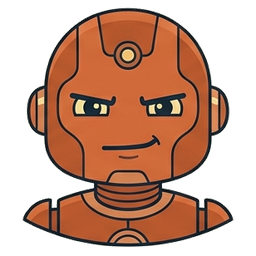

Solicitar aprovação
Você decide cada passo, mas a pergunta vem na língua do computador.
Vantagemnada acontece sem você.
Riscose você não entende a linha, aprova no escuro.
IA trabalhando no seu computador
Precisamos fazer esse curso ser uma experiência.
Victor, ao pedir esta apresentação · 2 nov. 2026
Jornal: busca do site da Folha de S.Paulo, sem curadoria · Busca: Google Trends, Brasil · coletados em 2 nov. 2026
Mostrar esse cenário a partir do observatório, utilizando o observatório como um “meta” exemplo.
Victor, nas anotações para o curso · 2 nov. 2026
Uma professora de Física quer que a turma veja, e não só decore, como se calcula o centro de massa.
Arraste os pesos: a gangorra tomba e a fórmula se refaz com os números da tela.
Um professor quer criar uma visualização para explicar para os seus alunos como funciona o cálculo de centro de massa.
Victor, pedindo este exemplo · 2 nov. 2026
Falta gente para o Uno de domingo. Dá para ter adversários que pensam cada jogada sem nenhuma IA ligada?
A partida acontece agora, no navegador: não é um vídeo gravado, e as cartas mudam a cada jogo. Os robôs não são IAs. Cada um tem uma ficha com três regras e confere de cima para baixo; o balão mostra a regra que ele usou.
Fazer algo bem mais impressionante, como se fosse uma mesa e tendo algum tipo de representação para cada bot.
Victor, sobre a versão anterior · 2 nov. 2026
Os robôs não foram desenhados por ninguém. Uma IA pediu a outra.
A atacante, o cuidadoso, a colorida e o guardador: o jeito de cada um está no rosto e na ficha de regras.



Quatro bustos de robôs simpáticos, lado a lado […] cada um com uma personalidade visível no rosto: um confiante, um pensativo, um alegre, um desconfiado.
Claude Code, pedindo ao Gemini (Antigravity) · 2 nov. 2026
Um laboratório quer acompanhar tudo o que sai sobre IA, em português, sem ter uma equipe de programadores.
Mais de 1.600 materiais, as notícias de IA todo dia e aulas interativas. De onde vieram os dados que vocês acabaram de ver.

Não houve um pedido só. O portal cresceu aos poucos, um pedido de cada vez: primeiro o catálogo, depois a nuvem de palavras, as notícias do dia, as aulas.
Equipe do Observatório · de julho a novembro de 2026
 A gangorra
A gangorra A mesa de cartasOs robôsO Observatório
A mesa de cartasOs robôsO ObservatórioResolvido aqui mesmo, sem instalar nada.
O monitor do curso fica no canto de todas as páginas. Ele responde com IA e leva você à página certa.
No fim da reunião, você fotografou a lousa com as tarefas da semana. Precisa mandar a tabela para a equipe, e ninguém quer digitar.
Em cerca de 10 segundos, o Gemini transformou a foto da lousa escrita a giz numa tabela com tarefa, responsável e prazo. As 7 tarefas ficaram iguais às da foto.
Transforma essa foto do quadro numa tabela com as colunas tarefa, responsável e prazo.
Digitado no Gemini, com a foto anexada · 3 nov. 2026
Você vai assinar o contrato de limpeza da sua padaria, de 5 páginas, e precisa entender valor, pagamento, multa e cancelamento antes de assinar.
No PDF de 5 páginas, o Gemini explicou valor, pagamento, atraso e cancelamento citando as cláusulas certas. Perguntado se a empresa usa produtos ecológicos, disse que o contrato não fala disso, em vez de inventar.
Vou assinar esse contrato de limpeza. Me explica em linguagem simples o que ele diz sobre o valor, o pagamento, a multa e o cancelamento, citando a cláusula de cada coisa.2º pedido
A empresa usa produtos ecológicos?
Digitado no Gemini, com o PDF anexado · 3 nov. 2026
A coordenadora de um programa de oficinas precisa mandar amanhã o relatório anual para a direção, e ninguém revisou o texto.
O Gemini achou os 10 problemas do relatório. Na primeira resposta, entregou o texto corrigido e escolheu sozinho qual número valia, sem marcar. No Word do segundo pedido, deixou as 3 divergências entre colchetes, em vermelho, como pedido.
Coordeno este programa e preciso mandar este relatório para a direção amanhã. Revise o texto: corrija os erros de português e me mostre numa tabela o que mudou (trecho original, correção e motivo). Depois, aponte qualquer informação que não bate entre uma parte e outra do relatório.2º pedido
Agora me devolva o relatório inteiro já corrigido, num arquivo do Word para eu baixar. Onde houver informação que não bate, deixe destacado entre colchetes para eu conferir antes de enviar.
Digitado no Gemini, com o Word anexado · 3 nov. 2026
A organizadora de um evento online recebeu a planilha do formulário com cidades escritas de vários jeitos e gente inscrita duas vezes. Precisa saber quantas pessoas vêm de cada cidade.
Nas 159 linhas, o Gemini juntou as grafias das cidades, achou as 9 pessoas repetidas e devolveu a planilha com resumo. Por canal e por oficina, porém, contou inscrições (159) em vez de pessoas (150), sem avisar.
Quero saber: quantas pessoas se inscreveram de cada cidade, por onde souberam do evento e em cada oficina? Tem alguém inscrito duas vezes? Faça um gráfico com as cidades. E me ensine a fórmula para eu fazer essa contagem sozinho no Excel da próxima vez.2º pedido
Ótimo. Agora me devolva a planilha arrumada para eu baixar: com as cidades padronizadas, sem as inscrições repetidas e com uma aba de resumo com as contagens de pessoas únicas.
Digitado no Gemini, com a planilha anexada · 3 nov. 2026
Seis colegas dividiram as despesas da confraternização de fim de ano do setor. A Elisa não foi ao almoço, e ninguém sabe quem deve quanto a quem.
Para 6 pessoas e 8 despesas, o Gemini montou uma calculadora no Canvas com total de R$ 1.528,20, igual à conta feita à mão. Com o almoço trocado de R$ 780 para R$ 900, recalculou tudo (R$ 1.648,20).
Quero uma calculadora interativa no Canvas pra dividir os gastos da confraternização de fim de ano do nosso setor. Já deixa preenchida com a lista abaixo, mas com os valores e as pessoas editáveis. […] Cada despesa deve ser dividida em partes iguais só entre quem participou dela.
Digitado no Gemini, com as 8 despesas no texto · 3 nov. 2026
Você precisa prestar contas de 9 comprovantes de viagem fotografados com o celular, e um dos cupons está desbotado.
O Gemini leu as 9 fotos de comprovantes e montou a tabela com o total certo, R$ 435,44. Acertou a data desbotada (13/07/2025), mas, num teste anterior, a mesma foto virou 19/07, sem aviso.
Tenho 9 comprovantes de despesas de uma viagem. Quero uma tabela com data, estabelecimento, categoria e valor de cada um, e o total no final. Se algum nome ou valor estiver ilegível, escreva "ilegível" em vez de chutar.
Digitado no Gemini, com as 9 fotos anexadas · 3 nov. 2026

A lousa virou tabela com as 7 tarefas certas, e ele achou os 10 problemas do relatório. No contrato, citou as cláusulas certas e disse quando o contrato não falava do assunto. A calculadora fechou com a conta feita à mão, e o total dos comprovantes bateu.
Na planilha, contou inscrições em vez de pessoas por canal e por oficina (50 na oficina de projetos, quando eram 46), sem avisar. No relatório, escolheu sozinho os números do texto corrigido. A resposta errada tem a mesma cara da certa.

Nos testes, a primeira resposta às vezes foi uma recusa (“Sou uma IA com base em texto”, diante das fotos dos comprovantes). Não era verdade: o mesmo pedido, de novo, funcionou. Nas gravações finais, não recusou.
No navegador, cada arquivo sobe ao site e cada resultado volta como download. Com uma pasta de dezenas de comprovantes todo mês, isso vira subir, baixar e organizar tudo à mão.
Na Fase 3, a IA instalada no seu computador lê e cria arquivos na pasta que você abrir, e você acompanha cada passo.
sobe, baixa e organiza à mão
Para os exemplos desta fase, cada pessoa precisa do app ChatGPT instalado no notebook e conectado a uma conta.
No site chatgpt.com, baixe o ChatGPT para desktop. O instalador abre a Microsoft Store e, na primeira vez, o app prepara o Windows. As esperas aparecem aceleradas. Depois, o app abre o navegador para você entrar com a conta e volta pronto para o primeiro pedido.
Gravado com uma conta gratuita · Windows
O agente pede licença para fazer algo e mostra uma linha que parece outra língua. Você clica em “Permitir” porque precisa terminar o trabalho. Teria clicado igual se a linha apagasse tudo.
Os três mostram o mesmo momento do teste do curso: o agente precisa da internet para buscar dados públicos do IBGE e a previsão do tempo (Open-Meteo) e montar um mapa de Goiânia.
Você decide cada passo, mas a pergunta vem na língua do computador.
Vantagemnada acontece sem você.
Riscose você não entende a linha, aprova no escuro.
Um segundo modelo lê o código e só chama você se houver risco; a pergunta chega traduzida.
Vantagemvocê não precisa ler código; o trabalho anda.
Riscoa tradução também pode errar; uma explicação bem escrita não garante que o resultado esteja certo.
O agente age direto no seu computador, sem perguntar.
Vantagemé o modo dos trabalhos grandes; nada trava no caminho.
Riscoa proteção tem de vir de fora: usar um computador ou um usuário do Windows separado, sem contas importantes abertas, e ter cópia dos arquivos.
Não existe modo certo para todo mundo. É uma escolha sua, pesando o que você ganha e o que arrisca.
Linhas e textos reais do teste do curso de 07/11/2026 (mapa de Goiânia), no app ChatGPT, modelo Luna, raciocínio Alto.
Neste curso usamos o ChatGPT no modo Aprovar por mim, depois de um pedido curto de preparo feito uma vez.
Com uma assinatura paga, que dá acesso a modelos mais capazes, o preparo pode ser menos necessário. Ele não atrapalha.
O preparo está na página Instalar.
“Solicitar aprovação apenas para ações detectadas como potencialmente inseguras”
Descrição do próprio app
A IA traduz nas duas direções: a sua ideia em código, e o que o código vai fazer em português.
Você não precisa dominar a linguagem para ter acesso à solução. Precisa saber o que pediu e conferir o que voltou.
O T de ChatGPT vem de Transformer, uma técnica criada em 2017 para tradução automática.
Uma pesquisadora voltou de duas viagens com fotos de cupons e PDFs baixados numa pasta. Precisa prestar contas das duas e não quer repetir o trabalho a cada viagem.
No primeiro zip, a pasta Viagens a trabalho: cinco fotos, o bilhete do ônibus, o voucher do hotel e o comprovante do Pix. No segundo, a pasta Novos comprovantes: quatro fotos, o recibo de uma corrida e um cartão de embarque.
Parte A: arraste Viagens a trabalho para a pasta de projetos e abra no app ChatGPT.
Parte B: no Explorador, selecione os arquivos de Novos comprovantes (Ctrl+A) e arraste soltos para dentro de Viagens a trabalho. O agente deve criar uma pasta separada para a viagem nova.
Em cerca de 11 minutos, o agente organizou os 8 arquivos em Alimentação, Hospedagem e Transporte e fechou o total em R$ 1.550,74. O voucher e o Pix do hotel entraram uma vez só.
Estes são os comprovantes da minha viagem a Campinas. Organize tudo para a minha prestação de contas: renomeie cada arquivo com a data, o nome do estabelecimento e o valor, separe em pastas por tipo de gasto e faça uma planilha com o total. Se algo deixar dúvida, me avise numa lista. No fim, escreva um passo a passo para eu repetir isso nas próximas viagens.
Digitado no app ChatGPT, na pasta Viagens a trabalho · 5 nov. 2026
Na mesma conversa, o agente seguiu o passo a passo da parte A, criou uma pasta separada para a viagem nova e deixou o cartão de embarque fora do total. Total R$ 253,50.
Juntei aqui os comprovantes de uma nova viagem. Siga o passo a passo que você escreveu e deixe tudo separado da viagem de Campinas.
Digitado no app ChatGPT, na mesma conversa, com os arquivos de Novos comprovantes dentro da pasta · 5 nov. 2026
A coordenadora de uma oficina precisa mandar um certificado para cada participante, no papel timbrado da instituição. A planilha tem 20 inscrições, e algumas pessoas se inscreveram duas vezes.
A planilha tem 20 linhas de inscrição. O modelo do Word tem o timbre, duas assinaturas e quatro campos entre colchetes: nome, oficina, carga horária e data.
Um PDF por pessoa, no papel timbrado.
Em cerca de 10 minutos, o agente leu a planilha, juntou as 4 inscrições repetidas pelo e-mail e gerou 16 PDFs pelo modelo do Word. Vale contar os arquivos na pasta.
Faça um certificado em PDF para cada pessoa da planilha, usando o modelo do Word. A Oficina de Planilhas para o Dia a Dia foi em 23 de maio de 2026 e teve 8 horas.
No app ChatGPT, no projeto 2-certificados · 6 nov. 2026
O seminário de maio mudou de data e de auditório. O organizador tem 12 arquivos para corrigir, e alguns prazos dependem da data do evento.
Convite, programação, e-mail, cartaz da porta, crachá, texto do site e mais seis. Todos dizem 10 de maio de 2027 e Auditório 2.
Agora é 17 de maio, no Auditório 1.
O pedido não fala dos prazos. Na gravação, vale abrir as regras de envio de trabalhos e o convite: os prazos de 5 e de 8 de maio também precisam andar.
O app ChatGPT no projeto 3-mudanca-de-data, com um pedido que só cita a data e o auditório.
Exemplo de reserva para fazer ao vivo · a gravar como garantiaO seminário mudou de 10 para 17 de maio de 2027, e do Auditório 2 para o Auditório 1. Atualize todos os arquivos e me diga o que mudou.
No app ChatGPT, no projeto 3-mudanca-de-data. O pedido não cita os prazos de propósito.
Um servidor recebeu as despesas do ano em 12 planilhas mensais, cada uma feita por uma pessoa de um jeito. Precisa juntar tudo e ver o total de cada mês.
A IA juntou as planilhas de despesas e gerou o gráfico. A conferência achou acentos quebrados nas abas, no resumo e no gráfico, corrigidos num segundo pedido.
Nesta pasta estão as planilhas de despesas de 2026, uma por mês, cada uma feita de um jeito. Junte tudo numa planilha só […], com uma aba por mês e uma aba Resumo com o total de cada mês e do ano. Faça também um gráfico dos totais por mês […]. Não altere os arquivos originais.
Digitado no Antigravity · 3 nov. 2026